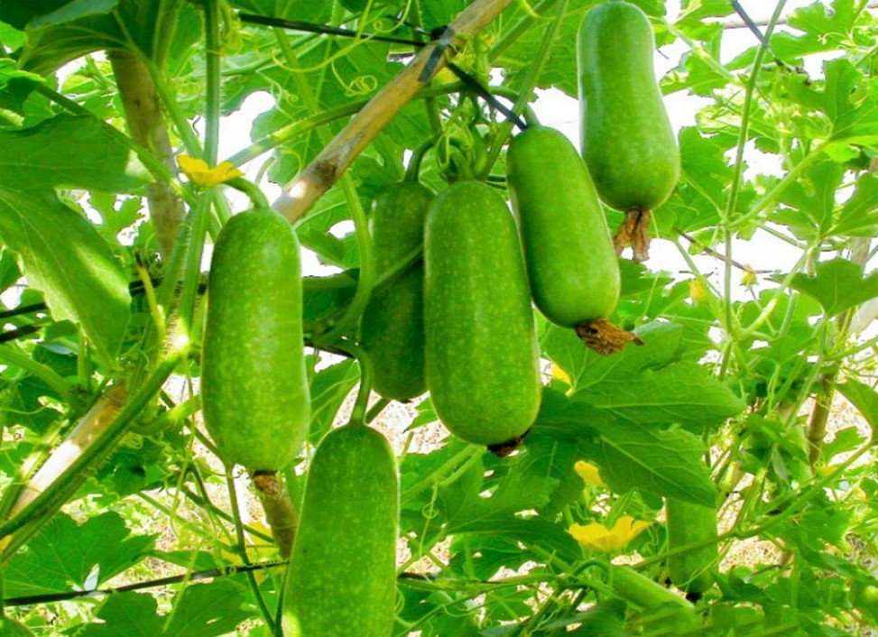
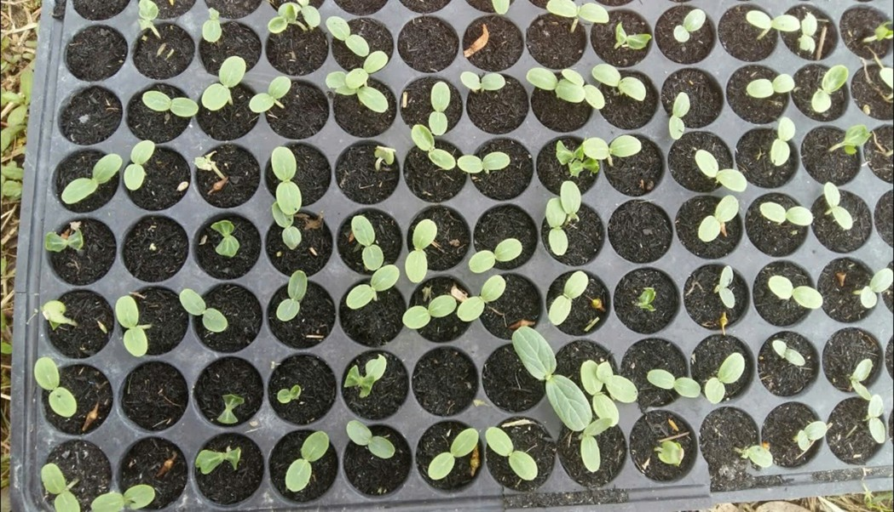

Hạt giống Bí Đao Chanh Rado 1331 được đánh giá cao về chuẩn giống, bảo đảm nảy mầm và có hiệu suất cao trong sản xuất. Đặc biệt, loại này có khả năng chống lại sâu bệnh tốt. Nếu bạn đang quan tâm đến hạt giống Bí Đao Chanh Rado 1331, hãy đặt mua ngay tại đây. Chúng tôi sẽ hướng dẫn bạn chi tiết về cách trồng từ hạt giống này.
Cách trồng Hạt giống Bí Đao Chanh Rado 1331 từ hạt giống
Cách ươm hạt Bí Đao Chanh Rado 1331
- Ngâm hạt giống bí đao trong nước ấm (khoảng 45 độ C) từ 6-8 giờ. Sau đó rửa sạch và để ráo.
- Cho hạt giống đã để ráo vào khăn ẩm, bỏ vào hộp nhựa đậy kín, đặt hộp trong nhà tránh ánh nắng trực tiếp.
- Sau 3-7 ngày, hạt bắt đầu nứt nanh, bạn tiến hành gieo hạt vào giá thể (với độ sâu khoảng 2-3 cm). Giá thể gồm 50% mụn dừa sạch + 50% phân hữu cơ ủ oai. Tái chế các ly nhựa cao 15cm để ươm cây con.

Cách trồng giống cây này
Đất trồng lựa chọn ra sao?
Đất phải đủ dinh dưỡng, có độ pH phù hợp và độ thoát nước tốt. Tỷ lệ trộn thông thường: đất thịt 50%, phân hữu cơ 20% (trùn quế, phân bò, phân dê, gà đã ủ hoai…), mụn dừa sạch 10%, trấu hun 10%, trấu sống 10% (hoặc dùng đá perlite).
Chăm sóc cây giống Bí Đao Chanh Rado 1331
- Tưới nước tùy vào thời tiết, ít nhất 1 lần mỗi ngày, tăng lượng nước khi cây ra hoa và quả.
- Bón phân định kỳ 10-12 ngày/lần với phân hữu cơ.
- Làm giàn sau 1 tháng, giúp cây leo phát triển mạnh mẽ.

Bí Đao Chanh Rado 1331 bao lâu thu hoạch được?
Sau khoảng 60 ngày trồng, trái đậu nhiều, bạn chọn những trái lớn thu hoạch trước, trái nhỏ thu sau.
Cam kết của Hạt Giống Nông Nghiệp
- Giao đúng hàng, đủ hàng
- Kiểm hàng trước khi nhận
- Đổi trả hàng 14 ngày
- Hàng đóng gói nguyên vẹn, còn hạn sử dụng
Dòng hạt giống Bí Đao Chanh Rado 1331 đã lâu đã được lòng bà con với sự ưa chuộng không hề nhỏ. Với hiệu suất cao, thời gian thu hoạch nhanh chóng và chất lượng sản phẩm ổn định, đây thực sự là lựa chọn không thể bỏ qua.